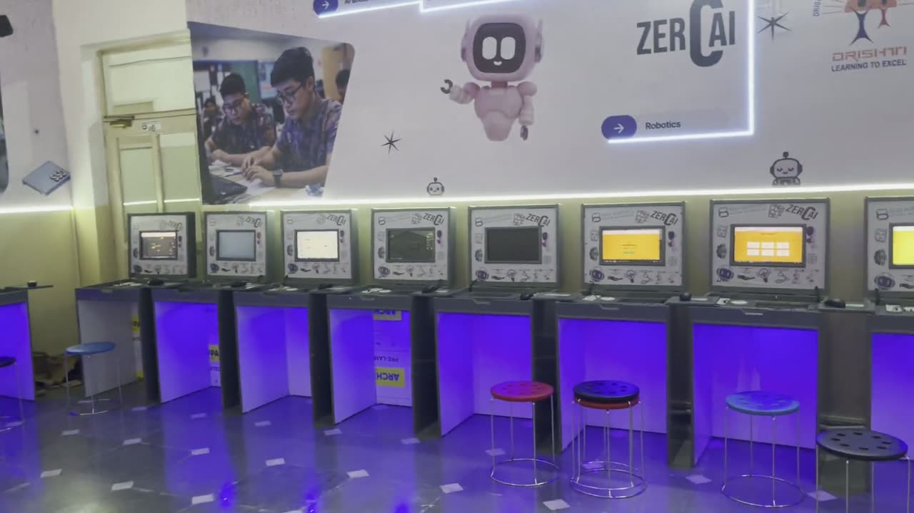
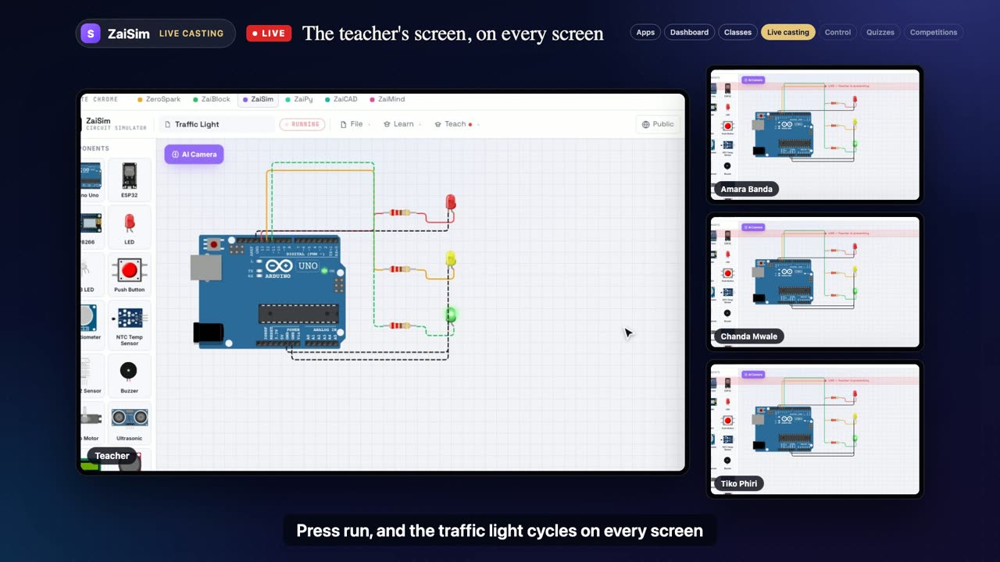
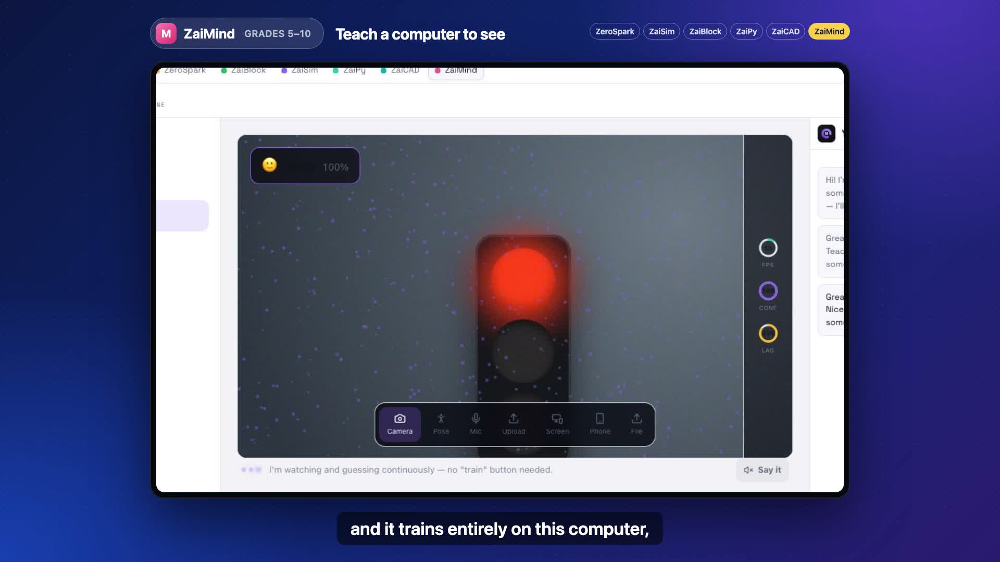

ZeroAI videos

End-of-life computers, a second life in schoolsA 30-station lab running on end-of-life Dell Wyse 3040s, and our request for 20,000 machines. Four short videos.

ZeroAI Studio: the connected STEM classroomThe online edition: live teacher casting, classroom control, quizzes and competitions. 2 min.

ZeroAI Studio: a three minute walkthroughThe offline edition: one traffic light through all six applications, no internet needed. 3 min.